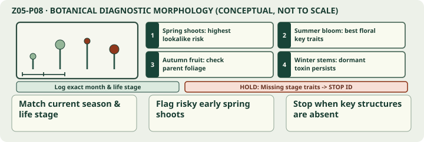

Z05-P08 · Wild foods and poisonous lookalikes · New manuscript
Seasonal Phenology Shifts and Life-Stage Identification Traps
Prevent life-stage errors caused by young spring shoots, summer fruiting shifts, and bare winter stems.
When it applies · Year-round plant and fungal field observation across Minnesota seasons.
Equipment · Seasonal phenology notes, Bell Museum Atlas date histograms.

Actions
- Account for dramatic morphological changes across life stages: emerging spring shoots of toxic false hellebore, blue flag iris, water hemlock, and pokeweed closely mimic benign greens before stems and flowers mature.[B10, B11, B20]
- Verify whether a species normally fruits or flowers in the current Minnesota month using regional phenology charts before proposing an identification.[B01, B20]
- Apply a strict stop condition during winter dormancy or early spring when missing flowers, leaves, or fruiting bodies leave key diagnostic traits unobservable.[B20, B24]
Failure recognition · Identifying a young leafless shoot or frost-blackened autumn stalk from memory causes high-severity seasonal poisonings.[B10, B11, B20]
Verify · Observed life stage matches documented seasonal window and all required diagnostic characters are physically present.[B01, B20]
Stop or change course · Stop identification immediately if the specimen is too immature, frost-damaged, or decayed to verify every key trait.[B20, B24]
Evidence and editorial notes
- B01 · Bell Museum (UMN) · Minnesota Biodiversity Atlas (Current web edition)
- Section: Minnesota Biodiversity Atlas regional occurrence and specimen data · Conditions: Documenting regional plant and fungal distribution in Minnesota
Support: Regional atlas records establish verified county-level occurrences and phenology windows for Minnesota plants and fungi.
Limitations: Occurrence maps confirm regional presence only; they never confirm a field specimen identity or consumption suitability. · Conflicting evidence: None noted.
Editorial note: Anchors Z05 Minnesota regional taxonomy. · Specialist reviewer: Bell Museum / regional botanist
Primary source · checked 2026-11-25 - B10 · National Capital Poison Center · Poisonous Plants and Berries Overview (Current web edition)
- Section: Poisonous plants, berries, and dose-dependent pediatric risk · Conditions: Household, trailside, and wild berries, seeds, and foliage
Support: Many attractive wild berries, seeds, and roots contain cardiac glycosides, alkaloids, or oxalates that cause rapid toxicity, especially in children.
Limitations: Never sample unknown plants; recognition and consumption suitability remain separate decisions. · Conflicting evidence: None noted.
Editorial note: Separates recognition from consumption. · Specialist reviewer: Clinical toxicologist and botanist
Primary source · checked 2026-11-25 - B11 · USDA ARS · Poisonous Plant Research Laboratory Reference (Current web edition)
- Section: Water hemlock (Cicuta) and poison hemlock (Conium) lethality · Conditions: Wetlands, ditches, and disturbed ground with Apiaceae (carrot-family) umbels
Support: Water hemlock (Cicuta maculata) and poison hemlock (Conium maculatum) contain potent neurotoxins causing rapid seizures, respiratory arrest, and death even from small bites.
Limitations: Never forage wild carrot-family roots or foliage without independent qualified botanical verification; reject any wet-ground umbel outright. · Conflicting evidence: None noted.
Editorial note: Mandatory Z05 lethal Apiaceae stop rule. · Specialist reviewer: Botanist and medical toxicologist
Primary source · checked 2026-11-25 - B20 · USDA Forest Service · Celebrating Wildflowers: Plant Identification and Conservation (Current web edition)
- Section: Botanical morphology terminology and multi-character keys · Conditions: Observing leaf venation, margins, flower symmetry, and fruit anatomy
Support: Accurate plant identification requires confirming multiple independent morphological characters at the observed life stage.
Limitations: Missing flowers, fruit, or underground parts require stopping identification rather than guessing. · Conflicting evidence: None noted.
Editorial note: Enforces multi-feature identification standard. · Specialist reviewer: Plant taxonomist
Primary source · checked 2026-11-25 - B24 · CDC MMWR · Notes from the Field: Severe Mushroom Poisoning — Minnesota 2018 (MMWR 68(21))
- Section: Rejection of folklore edibility tests and AI-only visual clearance · Conditions: All wild plant, berry, root, and fungal screening
Support: Universal skin/lip rub tests, silver-spoon tests, animal-browsing observations, single photos, and generated illustrations never establish edibility.
Limitations: If any diagnostic feature, site-contamination history, or expert review is missing, consumption remains strictly WITHHELD. · Conflicting evidence: None noted.
Editorial note: Enforces Z05 fail-closed edibility rule. · Specialist reviewer: Botanist, mycologist, and clinical toxicologist
Primary source · checked 2026-11-25
Source lineage · New manuscript (Z05 P19-C phenology) · Classification · New manuscript.